Like many other games, League of Legends has many game modes to choose from. A game mode is a way the game is played. In League of Legends, there are two five types of gamemodes: Blind, Draft, Ranked, ARAM, and Featured Gamemode. Out of these five game modes, there are three main maps that the game modes are played on. Summoners Rift has Blind, Draft, Ranked, and some of the Featured Gamemodes. Twisted Treeline has Blind and Ranked. ARAM has its own map called The Howling Abyss. Featured Gamemodes sometimes take place on Summoners Rift, but sometimes have their own custom map.
 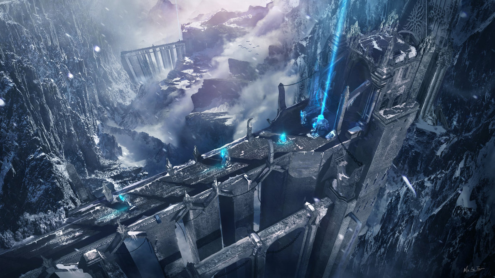
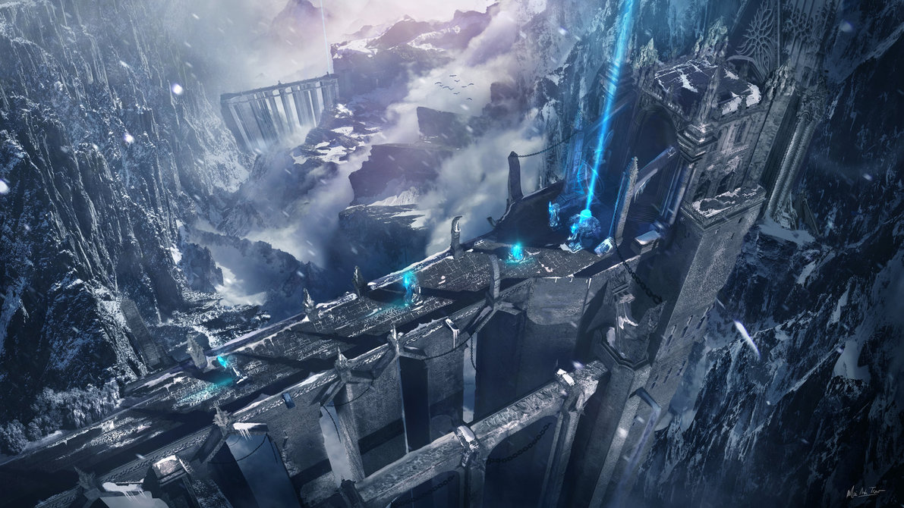
Blind pick is a gamemode without the banning of champions, no assigned roles, and you cannot see what the enemy is picking. Blind is a the fastest in terms of queue time because there aren't assigned roles. With assigned roles, the game needs to find players five players per team who want different roles from each other in the same region. In Blind mode, it's customary to call lanes when entering a lobby. This reduces confusion and makes sure all of the roles are filled. Blind is usually for casual players who just want to have fun. Wins and losses in this gamemode do not affect your rank.
 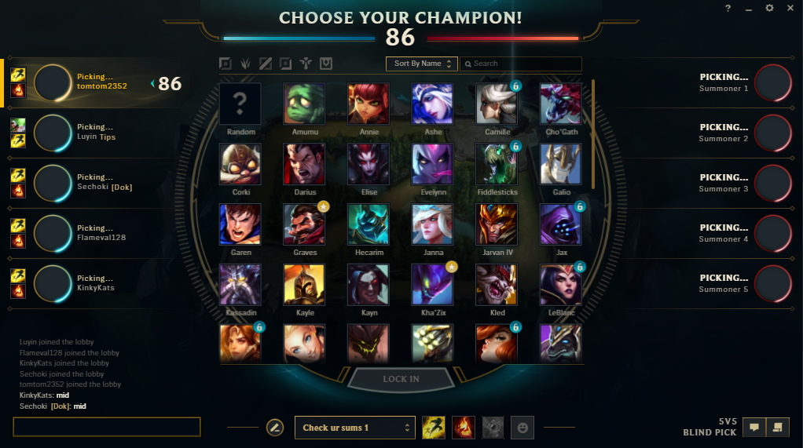
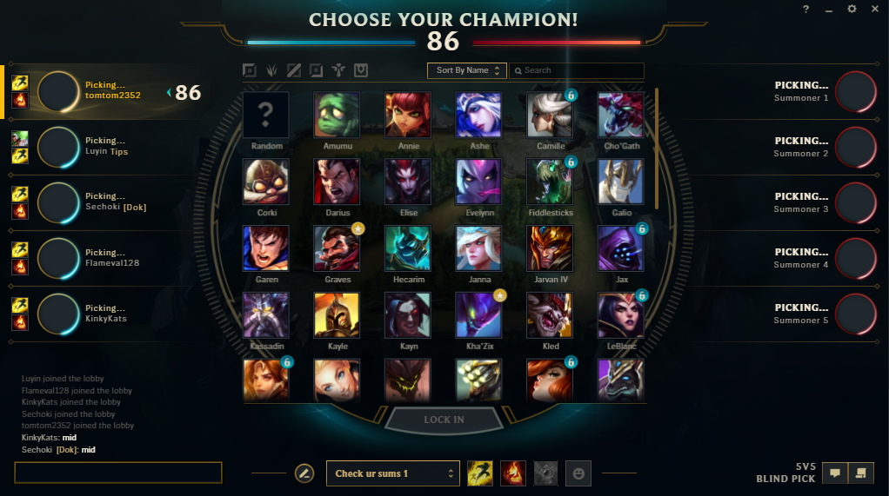
Draft pick is almost exactly like Blind pick except there are picks, bans, and you can see what the enemy is picking. This gamemode also doesn't affect your rank. Queue times in this gamemode are longer then blind because the game needs to fine five players per team who want different roles from each other in the same region. In Draft pick, you need to declare the role you would like before game.
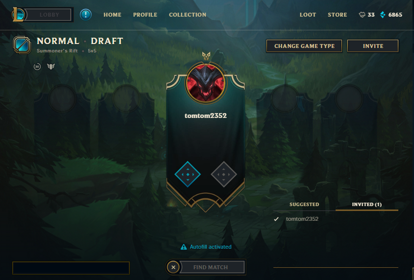 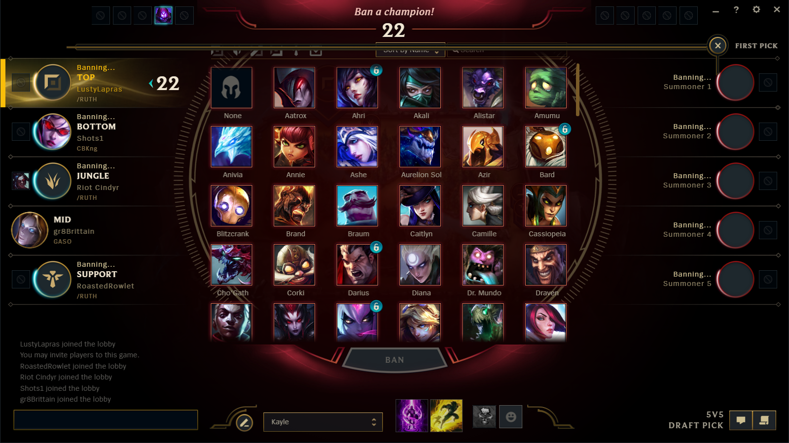Ranked is the competitive game mode of League of Legends. Playing ranked games affects how much LP you have. LP, or League Points, is a secondary rating system to MMR and ELO. LP is gained by winning games and is lost when you lose them. The amount you gain and lose is determined bu your MMR. MMR, or Match Making Rank, is a hidden rating every account has that determines how much LP you gain or lose. The bigger the difference between your rank MMR and your actual MMR, the more LP you will gain or lose. For example, if the average MMR of a players rank is 2000 and he has a MMR of 2200, he will gain more LP then on average. MMR also determines what players you get matched up with. If you have been winning frequently, your MMR will be high and it will be easier to climb because the game will be match you up with higher ranking, more experienced players. ELO is the actual rank you are. There are seven divisions, Bronze, Silver, Gold, Platinum, Diamond, Master, and Challenger. In each division, with the exception of Master and Challenger, there are five tiers. The higher the tier number, the lower you you are in that division. Master and Challenger are different in the sense that they are one division with the only difference being that challenger players are the top 200 players in the region. After you rank up from diamond into masters, there aren't any tiers. Instead, you only have LP. Every day, the top 200 players with the highest LP get placed into the Challenger division. To maintain your placement, players have to play frequently to avoid LP decay. LP decay affect players above Platinum division (Ranked Play, n.d.). After a certain amount of days, if a player doesn't play a ranked game, they will lose LP each day they don't play. The LP decay is more the higher division you are in. This forces players to play frequently to keep their rank or face demotion.
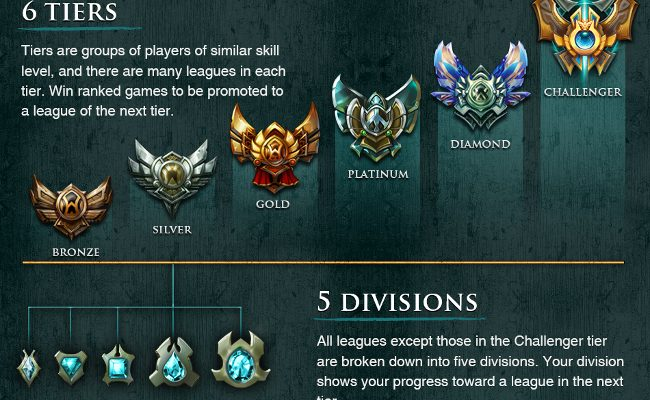 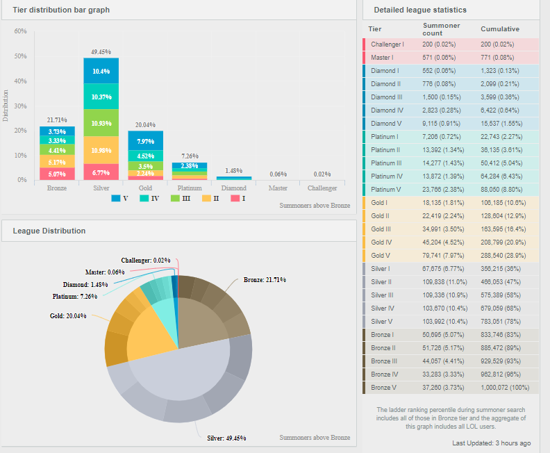ARAM is a game mode that takes place only on The Howling Abyss. It is exactly the same as blind pick except you cannot pick your champion. The game picks a champions for you and you can either keep the champ, or re-roll it. The are five players per team, but there is only one lane. You can also trade your champion to a teammate if both you and your teammate own the trading champions.
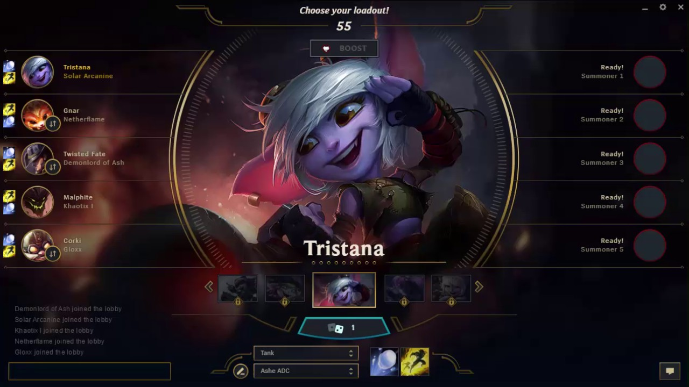Featured Gamemodes aren't in the game permanently. There is a rotation of game modes to play and each game mode is only available to be played for a certain amount of time. Some of the game modes include, Ascension, Black Market Brawlers, Dark Star: Singularity, Definitely Not Dominion, Doom Bots, Hexakill, Hunt of the Blood Moon, Invasion, Nemesis Draft, Nexus Siege, One for All, OVERCHARGE, Snowdown Showdown, and most famous of all Ultra Rapid Fire. In Ultra Rapid Fire, also known as URF, all champions receive 80% cool down reduction, five times gold income, and other amazing stats. Some players return just to play this game mode.
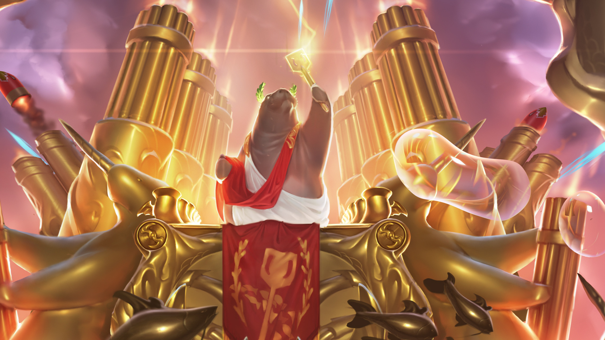 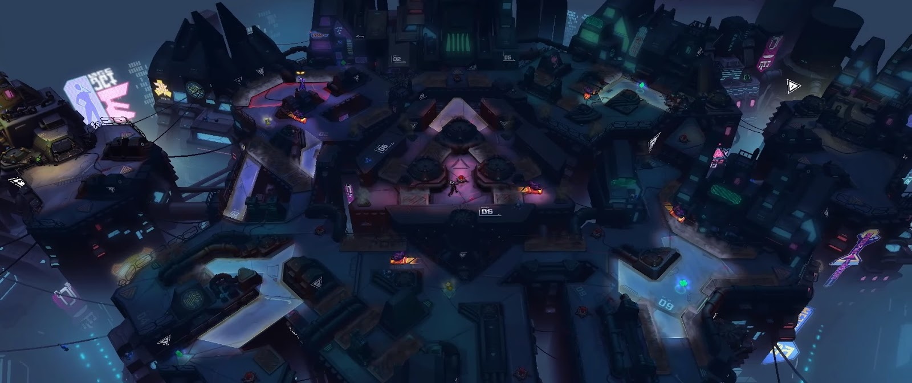